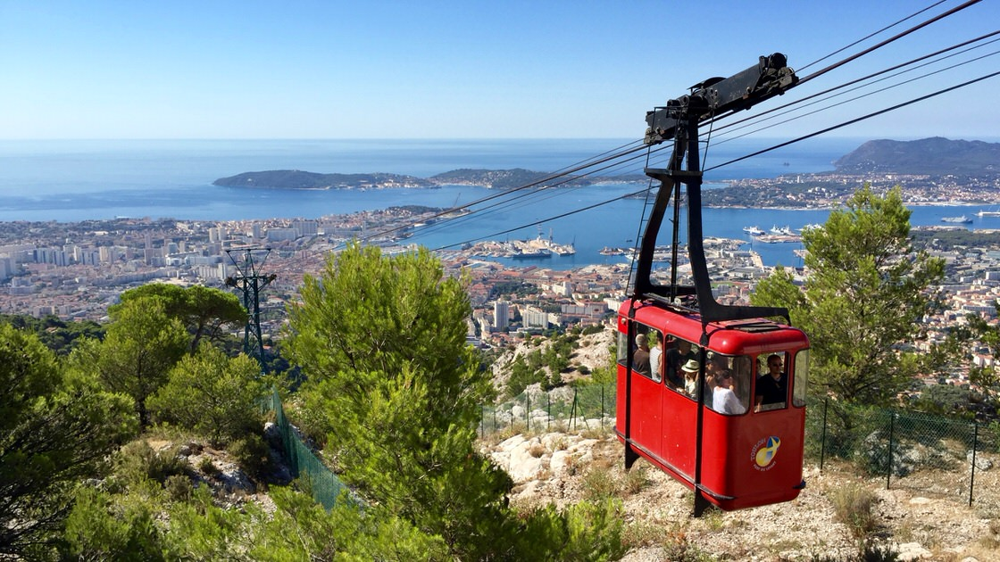
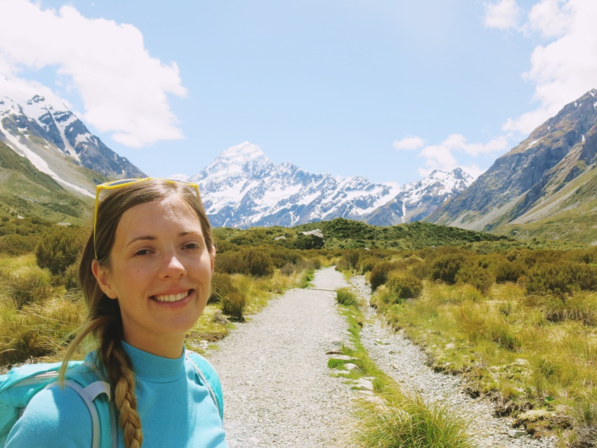
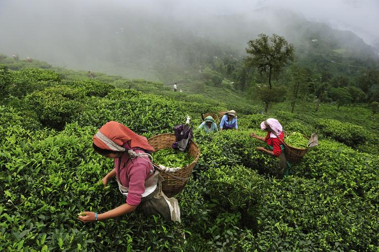

YouMap
Rejestracja
Link 1
Link 2
Link 3
My Profile
Jakiś opis do zdjęcia. Np. WoW, jaki piękny widok.
#Banglasesz #super #trip
17.07.2016
Jakiś opis do zdjęcia. Np. WoW, jaki piękny widok.
#Banglasesz #super #trip

18.07.2016
Bardzo długie opisy są ucinane do trzech kropek. Oto przykład. Obserwujcie!
#Kolejka

19.07.2016
Jakiś opis do zdjęcia. 2
#góry

20.07.2016
Jakiś opis do zdjęcia. 3
#Herbata #tea #zbiory
21.07.2016
Jakiś opis do zdjęcia. 4
#Słoniki #Indie
Previous
Next